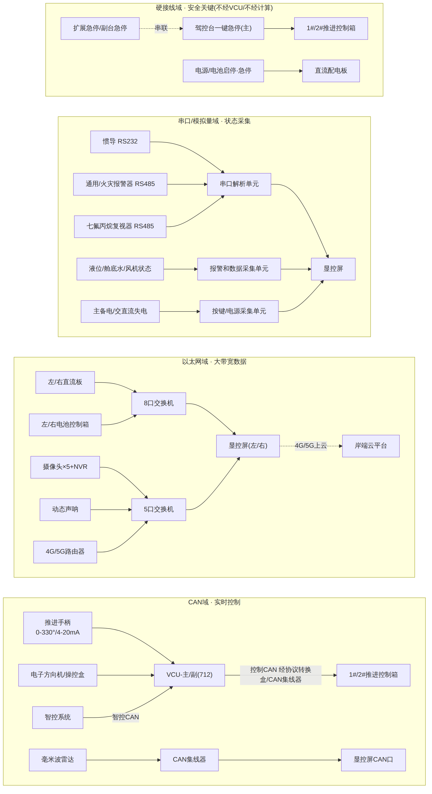

三、信号与数据流架构
3.1 四类总线一览
| 总线/介质 | 典型信号 | 特点 | 是否经 VCU |
|---|---|---|---|
| CAN(智控CAN/控制CAN/操控CAN) | 推进转速、转向角度、智控指令、手柄/方向机操控 | 实时闭环控制 | 是(常规操作) |
| 以太网(RJ45,百兆/千兆) | 直流板、电池、摄像头、声呐、4G路由 | 大带宽数据/视频 | 否(旁路,直连交换机→屏) |
| RS485/RS232/模拟量 | 惯导、通用/火灾报警器、七氟丙烷复视器、液位、4-20mA转速反馈 | 状态采集 | 否(经专用采集单元→屏) |
| 硬接线 | 急停、电池急停、电源启停、故障灯 | 安全关键 | 否,物理旁路 VCU |
3.2 按总线域拆分的数据流图
